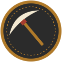
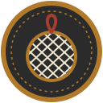

All Quests
Quests are listed from 1 star (easiest) to 5 stars (hardest).
-

Herb Run
Difficulty: ★☆☆☆☆
Collect herbs and honey for the Guild’s healers before the next hunting party leaves.
Type: Gather · Location: Ancient Forest · Reward: 300 Zenny
-

Farm Raider
Difficulty: ★☆☆☆☆
A lone Great Jagras keeps raiding a farm at the village edge. Drive it off.
Type: Hunt · Location: Ancient Forest · Reward: 500 Zenny
-
Strange Tracks
Difficulty: ★★☆☆☆
The Research Commission needs a hunter to follow unfamiliar tracks and report what made them.
Type: Investigate · Location: Wildspire Waste · Reward: 700 Zenny
-
Canteen Supplies
Difficulty: ★★☆☆☆
Gather mushrooms and spices to restock the Canteen.
Type: Gather · Location: Wildspire Waste · Reward: 800 Zenny
-
Territorial Anjanath
Difficulty: ★★★☆☆
An Anjanath has claimed the river crossing, and travelers cannot pass.
Type: Hunt · Location: Ancient Forest · Reward: 2,000 Zenny
-

Pukei-Pukei Study
Difficulty: ★★★☆☆
The Research Commission wants a Pukei-Pukei captured alive for study.
Type: Capture · Location: Coral Highlands · Reward: 2,500 Zenny
-
Trade Route Menace
Difficulty: ★★★★☆
Capture the Rathalos that keeps circling the trade route.
Type: Capture · Location: Wildspire Waste · Reward: 5,000 Zenny
-
Elder Dragon Alert
Difficulty: ★★★★★
Nergigante has been sighted along the trade route. Master Rank hunters only.
Type: Hunt · Location: Elder’s Recess · Reward: 12,000 Zenny